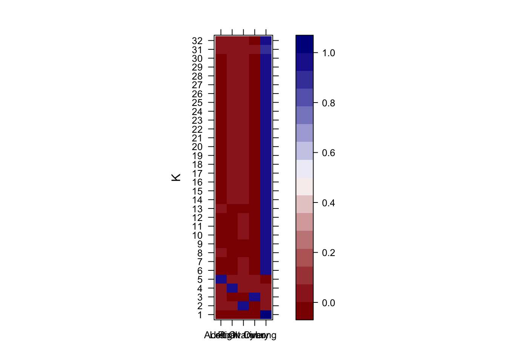

first-analysis
surbut
2018-09-28
Last updated: 2018-09-28
workflowr checks: (Click a bullet for more information)-
✔ R Markdown file: up-to-date
Great! Since the R Markdown file has been committed to the Git repository, you know the exact version of the code that produced these results.
-
✔ Environment: empty
Great job! The global environment was empty. Objects defined in the global environment can affect the analysis in your R Markdown file in unknown ways. For reproduciblity it’s best to always run the code in an empty environment.
-
✔ Seed:
set.seed(20180928)The command
set.seed(20180928)was run prior to running the code in the R Markdown file. Setting a seed ensures that any results that rely on randomness, e.g. subsampling or permutations, are reproducible. -
✔ Session information: recorded
Great job! Recording the operating system, R version, and package versions is critical for reproducibility.
-
Great! You are using Git for version control. Tracking code development and connecting the code version to the results is critical for reproducibility. The version displayed above was the version of the Git repository at the time these results were generated.✔ Repository version: dfaca59
Note that you need to be careful to ensure that all relevant files for the analysis have been committed to Git prior to generating the results (you can usewflow_publishorwflow_git_commit). workflowr only checks the R Markdown file, but you know if there are other scripts or data files that it depends on. Below is the status of the Git repository when the results were generated:
Note that any generated files, e.g. HTML, png, CSS, etc., are not included in this status report because it is ok for generated content to have uncommitted changes.Ignored files: Ignored: .DS_Store Ignored: .Rproj.user/ Ignored: analysis/Pearson_cache/ Untracked files: Untracked: analysis/first-analysis.Rmd
Expand here to see past versions:
| File | Version | Author | Date | Message |
|---|---|---|---|---|
| Rmd | dfaca59 | surbut | 2018-09-28 | modified_file_path |
R Markdown
Here I load the data from my Data directory within this project:
#install.packages("workflowr")
#library("workflowr")
temp = list.files(path="~/Dropbox/Pearson_Data/Data/",pattern="Decon*",full.names = TRUE)Combine into merged data set, you can see the data is actually in a different order than 1:10;
temp [1] "Decon_LC1.csv" "Decon_LC10.csv" "Decon_LC11.csv" "Decon_LC12.csv"
[5] "Decon_LC13.csv" "Decon_LC14.csv" "Decon_LC2.csv" "Decon_LC3.csv"
[9] "Decon_LC4.csv" "Decon_LC5.csv" "Decon_LC6.csv" "Decon_LC7.csv"
[13] "Decon_LC8.csv" "Decon_LC9.csv" Here we combine the dfs into a list and merge shared rows.
myfiles = lapply(temp, function(x){
a=read.csv(file=x,header = T);
return(a[,c(2:3)])})
b=Reduce(function(x,y) merge(x, y, by = "full_label", all.x = TRUE, all.y = TRUE),myfiles)
b[is.na(b)] <- 0
rownames(b)=b[,1];b=b[,-1]
mat=as.matrix(b)You can see that the barcodes are in the rows and the tissue samples are in the columns, in the order posted above,
head(mat) full_readnum.x full_readnum.y full_readnum.x.1
bar|1 13336 519 0 0
bar|1 13973 211 0 0
bar|1 5589 85 0 0
bar|1 9115 230 141 0
bar|10 6039 245 309 0
bar|100 14202 197 0 0
full_readnum.y.1 full_readnum.x.2 full_readnum.y.2
bar|1 13336 0 0 0
bar|1 13973 0 0 0
bar|1 5589 0 0 0
bar|1 9115 0 0 0
bar|10 6039 1 30 0
bar|100 14202 0 0 0
full_readnum.x.3 full_readnum.y.3 full_readnum.x.4
bar|1 13336 0 0 0
bar|1 13973 0 0 0
bar|1 5589 0 0 0
bar|1 9115 1 11 13
bar|10 6039 0 0 0
bar|100 14202 0 0 0
full_readnum.y.4 full_readnum.x.5 full_readnum.y.5
bar|1 13336 0 0 0
bar|1 13973 0 0 0
bar|1 5589 0 0 0
bar|1 9115 0 0 0
bar|10 6039 0 0 0
bar|100 14202 0 0 0
full_readnum.x.6 full_readnum.y.6
bar|1 13336 0 0
bar|1 13973 0 0
bar|1 5589 0 0
bar|1 9115 0 0
bar|10 6039 0 0
bar|100 14202 0 0and that the rows correspond to unique barcodes:
length(rownames(b))[1] 111595length(unique(rownames(b)))[1] 111595There are 14 unqiue barcodes. NOw we install some packages necessary for the GOM model according to CountClust vignette.
# install.packages("maptpx")
source("https://bioconductor.org/biocLite.R")Bioconductor version 3.7 (BiocInstaller 1.30.0), ?biocLite for helpbiocLite("CountClust")BioC_mirror: https://bioconductor.orgUsing Bioconductor 3.7 (BiocInstaller 1.30.0), R 3.5.1 (2018-07-02).Installing package(s) 'CountClust'
The downloaded binary packages are in
/var/folders/2h/6fmv9psj32v9mzpd6nkrn7zr0000gn/T//Rtmp6DD1zI/downloaded_packagesOld packages: 'ape'library('CountClust')Loading required package: ggplot2#label_names=read.csv("../Data/sample_names.csv",header = F)
#source("https://bioconductor.org/biocLite.R")
#abiocLite("Biobase")
# Here's a tutorial from the help file of Count Clust on GTEX data
# gtex.counts <- Biobase::exprs(GTExV6Brain)
# gtex.meta_data <- Biobase::pData(GTExV6Brain)
# gtex.gene_names <- rownames(gtex.counts)
#
# FitGoM(t(gtex.counts),
# K=4, tol=1)
#fit <- FitGoM(t(b),K=4, tol=1)
library("RColorBrewer")To fit for multiple K:
fits <- lapply(8:10, function(k) FitGoM(t(b),K=k, tol=1))## try over different Ksoptions not specified: switching to default BIC, other choice is BF for Bayes factorFitting a Grade of Membership model
(Taddy M., AISTATS 2012, JMLR 22,
http://proceedings.mlr.press/v22/taddy12/taddy12.pdf)
Estimating on a 14 document collection.
Fit and Bayes Factor Estimation for K = 8
log posterior increase: 193380111.7, done.
log BF( 8 ) = 759341206.63options not specified: switching to default BIC, other choice is BF for Bayes factor
Fitting a Grade of Membership model
(Taddy M., AISTATS 2012, JMLR 22,
http://proceedings.mlr.press/v22/taddy12/taddy12.pdf)
Estimating on a 14 document collection.
Fit and Bayes Factor Estimation for K = 9
log posterior increase: 55720728.9, done.
log BF( 9 ) = 733977732.28options not specified: switching to default BIC, other choice is BF for Bayes factor
Fitting a Grade of Membership model
(Taddy M., AISTATS 2012, JMLR 22,
http://proceedings.mlr.press/v22/taddy12/taddy12.pdf)
Estimating on a 14 document collection.
Fit and Bayes Factor Estimation for K = 10
log posterior increase: 259760567.3, done.
log BF( 10 ) = 1020313934.65#fit=FitGoM(t(b),K=4, tol=1)
omega <- fits[[3]]$fit$omega
fitGOM=fits[[3]]$fit
attributes(fitGOM)$names
[1] "K" "theta" "omega" "BF" "D" "X"
$class
[1] "topics"annotation <- data.frame(
sample_id = rownames(omega),
tissue_label = factor(rownames(omega),
levels = rownames(omega),
labels=rev( c("cell_pellet", "lung_5","liver_5","rt.ovary_5","sc_tumor_2","omentum_5","sc_tumor", "lung_m3","liver_m3","right_ovary_3", "left_ovary_3", "adrenal_3", "lung_4","rt_ovary_4"))))
rownames(omega) <- annotation$sample_id;
sample_id <- rownames(omega)
annotation$sample_id <- as.character(annotation$sample_id)
StructureGGplot(omega = omega,
annotation = annotation,
palette = c(brewer.pal(8, "Accent"),brewer.pal(8, "Accent")),
yaxis_label = "Development Phase",
order_sample = TRUE,
axis_tick = list(axis_ticks_length = .1,
axis_ticks_lwd_y = .1,
axis_ticks_lwd_x = .1,
axis_label_size = 7,
axis_label_face = "bold"))
Let’s plot a heatmap of the clones driving the clusters:
library('lattice')
barplot(height = fitGOM$theta,col = brewer.pal(9,"Greens"),main="CloneRepresentation per Cluster")
We extract the top clones driving each cluster using the ExtractTopFeatures functionality of the CountClust package. We first perform the cluster annotations from the GoM model fit with $k=10` on the clone data:
#install.packages("dplyr")
library('dplyr')
theta_mat <- fitGOM$theta;
top_features <- ExtractTopFeatures(theta_mat, top_features=100,
method="poisson", options="min");
clone_names=rownames(b)
cell_list <- do.call(rbind, lapply(1:dim(top_features$indices)[1],
function(x) clone_names[top_features$indices[x,]]))
tmp <- do.call(rbind, lapply(1:5, function(i) toString(cell_list[,i])))
rownames(tmp) <- paste("Cluster", c(1:5))
#library(knitr)
#install.packages("kableExtra")
library("kableExtra")
rownames(tmp) <- paste("Cluster", c(1:3))
tmp %>%
kable("html") %>%
kable_styling()Session information
sessionInfo()R version 3.5.1 (2018-07-02)
Platform: x86_64-apple-darwin15.6.0 (64-bit)
Running under: macOS High Sierra 10.13.3
Matrix products: default
BLAS: /Library/Frameworks/R.framework/Versions/3.5/Resources/lib/libRblas.0.dylib
LAPACK: /Library/Frameworks/R.framework/Versions/3.5/Resources/lib/libRlapack.dylib
locale:
[1] en_US.UTF-8/en_US.UTF-8/en_US.UTF-8/C/en_US.UTF-8/en_US.UTF-8
attached base packages:
[1] stats graphics grDevices utils datasets methods base
other attached packages:
[1] lattice_0.20-35 RColorBrewer_1.1-2 CountClust_1.8.0
[4] ggplot2_3.0.0 BiocInstaller_1.30.0 workflowr_1.1.1
loaded via a namespace (and not attached):
[1] gtools_3.8.1 modeltools_0.2-22 tidyselect_0.2.4
[4] slam_0.1-43 purrr_0.2.5 reshape2_1.4.3
[7] colorspace_1.3-2 htmltools_0.3.6 stats4_3.5.1
[10] mgcv_1.8-24 yaml_2.2.0 rlang_0.2.2
[13] R.oo_1.22.0 pillar_1.3.0 glue_1.3.0
[16] withr_2.1.2 R.utils_2.7.0 bindrcpp_0.2.2
[19] bindr_0.1.1 plyr_1.8.4 stringr_1.3.1
[22] munsell_0.5.0 gtable_0.2.0 R.methodsS3_1.7.1
[25] codetools_0.2-15 evaluate_0.11 knitr_1.20
[28] permute_0.9-4 flexmix_2.3-14 parallel_3.5.1
[31] Rcpp_0.12.18 scales_1.0.0 backports_1.1.2
[34] limma_3.36.5 vegan_2.5-2 maptpx_1.9-2
[37] picante_1.7 digest_0.6.17 stringi_1.2.4
[40] dplyr_0.7.6 grid_3.5.1 rprojroot_1.3-2
[43] cowplot_0.9.3 tools_3.5.1 magrittr_1.5
[46] lazyeval_0.2.1 tibble_1.4.2 cluster_2.0.7-1
[49] crayon_1.3.4 ape_5.1 whisker_0.3-2
[52] pkgconfig_2.0.2 Matrix_1.2-14 MASS_7.3-50
[55] SQUAREM_2017.10-1 assertthat_0.2.0 rmarkdown_1.10
[58] R6_2.2.2 nnet_7.3-12 nlme_3.1-137
[61] git2r_0.23.0 compiler_3.5.1 This reproducible R Markdown analysis was created with workflowr 1.1.1